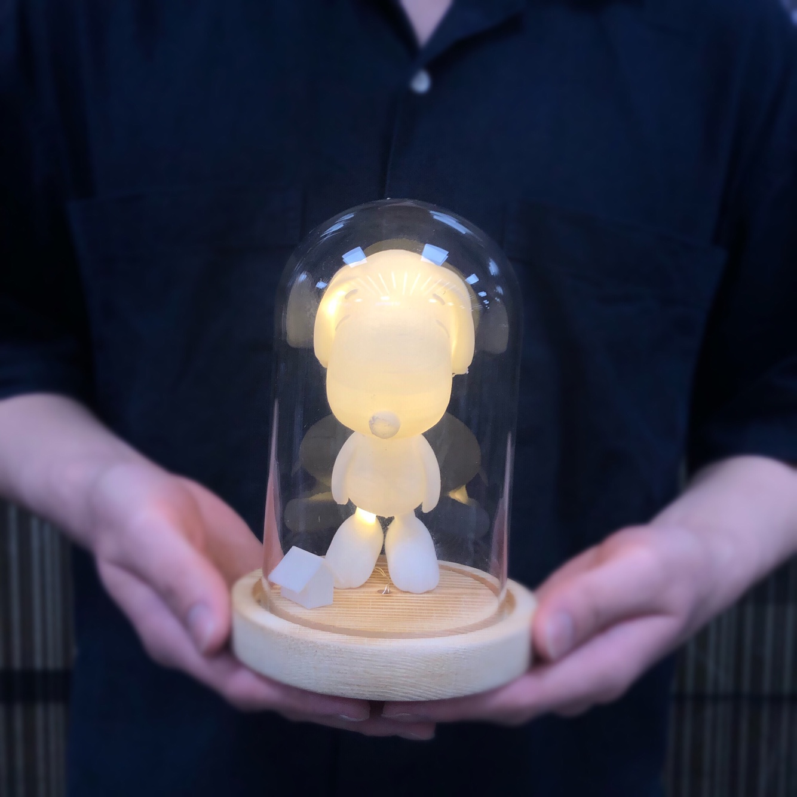

-
2020년 7월 28일
"이정욱" 님이 들어왔습니다.
-
이정욱MBTISTAR 라고 팀이름을 정하셨는데 소재와 이유가 있을까요?
-
저희는 12궁 시계와 MBTI 중 최근 관심도가 높고 특별할 것 같은 MBTI를 활용하기로 하였습니다.
MBTI는 Myers-Briggs Type Indicator로 마이어스와 브릭스가 스위스의 정신분석학자인 카를 융의 심리 유형론을 토대로 고안한 자기 보고식 성격 유형 검사 도구입니다.
저희 팀의 이름을 MBTI STAR 라고 정한 것은 요즘 트랜드한 MBTI를 기반으로 집에서 쉽게 만들 수 있는 무드등을 제작하기 때문입니다. -
코로나19로 인해 외출하지 못하고 집에만 있는 요즘! 사람들의 실내 생활이 증가하면서 실내에서 즐길 수 있는 인테리어 소품들에 대한 수요가 크게 늘고 있다고 합니다. 그렇기 때문에 저희는 코로나 시대의 홈코노미 제품으로 제격인 무드등을 준비하였습니다. 저희가 준비한 무드등은 단순한 무드등이 아닌 앞서 설명드린 MBTI와 결합한 상품인데요 MBTI별로 상징하는 동물들을 무드등에 적용하였습니다 자신만의 무드 등으로 실내를 꾸며 온화한 분위기를 연출하면 *코로나 블루 증상에 대처할 수 있습니다. 저희 무드 등과 더 밝은 내일을 함께하세요!
*'코로나19'와 '우울감(blue)'이 합쳐진 신조어로, 코로나19 확산으로 일상에 큰 변화가 닥치면서 생긴 우울감이나 무기력증을 뜻한다.
"임효진" 님이 들어왔습니다.임효진그러면 최근 트렌드라는 MBTI, 저도 확인을 하고 싶은데 혹시 검사할만한 사이트가 있나요? "MBTI 검사 하기" 를 누르시면 바로 이용이 가능합니다.무료 검사의 경우 위에서 지금 클릭하신 사이트를 통해 이용이 가능하지만 정식 검사지와 비교했을 때 약식 유형이기 때문에 정확한 검사나 해석은 어려우며 대략적인 이해와 흥미유발 수준의 검사이므로 정확하고 심화적인 이해와 인증된 MBTI 전문가의 해석을 듣길 원한다면 가까운 청소년 상담복지센터, 사회복지관, 각 대학교 학생상담 센터 등에 내방하여 검사를 자세히 해보는 것을 권장 드립니다.
"MBTI 검사 하기" 를 누르시면 바로 이용이 가능합니다.무료 검사의 경우 위에서 지금 클릭하신 사이트를 통해 이용이 가능하지만 정식 검사지와 비교했을 때 약식 유형이기 때문에 정확한 검사나 해석은 어려우며 대략적인 이해와 흥미유발 수준의 검사이므로 정확하고 심화적인 이해와 인증된 MBTI 전문가의 해석을 듣길 원한다면 가까운 청소년 상담복지센터, 사회복지관, 각 대학교 학생상담 센터 등에 내방하여 검사를 자세히 해보는 것을 권장 드립니다.
"서다빈" 님이 들어왔습니다.서다빈팀원들의 MBTI를 소개 해주세요!팀원1:
저의 유형은 INTJ 입니다. 독창적인 마인드를 가지고 자신의 아이디어를 수행하고자 하며, 목적을 성취하는 것에 대한 커다란 욕구를 지니고 있습니다.더 자세한 사항은 INTJ 를 참고 하시면 될거 같습니다.팀원2:
저의 성격 유형은 엄격한 관리자, 사업가형인 ESTJ입니다. MBTI 유형별 동물에서 보면 엄격하고 공격적인 늑대로 표현할 수 있습니다. 또한 정직하며 헌신적이고 질서를 정립하는데 노력한다고 합니다.더 자세한 사항은 ESTJ 를 참고 하시면 될거 같습니다.팀원3:
저의 유형은 ISFP형 입니다. ISFP형은 성인군자형으로서 마음이 따뜻하지만 상대방을 잘 알게 될 때까지 이 따뜻함을 잘 드러내지 않는다. 모든 유형 중 가장 겸손한 유형이며 삶의 현재를 즐기고 여유를 가지고 생활한다.더 자세한 사항은 ISFP 를 참고 하시면 될거 같습니다.팀원4:
저의 유형은 ENFJ로서 따뜻하고 적극적이며 책임감이 강하고 사교성이 풍부합니다. 미래의 가능성을 추구하며 편안하고 능란하게 계획을 제시하고 집단을 이끌어 가는 능력이 있습니다.더 자세한 사항은 ENFJ를 참고 하시면 될거 같습니다.팀원5:
저의 유형인 ENFP는 재기 발랄한 활동가 유형으로 즉흥적이고 긍정적이고 낙천적인 성격으로 아이디어와 창의력이 뛰어나고 새로운 사람을 만나는 것을 좋아하며 리액션을 잘해 다른 사람의 이야기를 잘 들어주는 유형입니다.더 자세한 사항은 ENFP를 참고 하시면 될거 같습니다.
"장훈" 님이 들어왔습니다.장훈저와 관련을 만들 수 있는 제품이 있을까요?3d 프린트 팀:
저희가 준비한 제품은 3d 프린터를 이용한 무드 등입니다.
유리 돔 무드 등 가운데에 자신의 mbti와 관련된 동물을 3d 프린터로 출력하여 무드 등 효과를 낼 수 있는 아이템입니다.
자신의 mbti에 따라 달라지는 동물, 캐릭터에 따라 재미있게 즐길 수 있습니다.3d 프린트 팀 : 3D 프린트 무드등의 완제품 사진과 영상입니다.
아크릴팀:
저희가 준비한 제품은 아크릴을 이용한 무드 등입니다.
아크릴 위에 준비된 시안을 기반으로 직접 그리는 키트와 레이저 커터를 통해 만들어진 조각에 자신의 mbti에 관련된 동물을 그리거나 출력할 수 있습니다.
자신의 mbti에 따라 달라지는 동물, 캐릭터에 따라 재미있게 즐길 수 있습니다.아크릴 팀:
아크릴 무드등의 완제품 영상입니다.
아크릴 팀:
아크릴 무드등의 완제품 사진입니다.
"이상지" 님이 입장하셨습니다.이상지MBTI 검사를 했는데 각 MBTI별로 간단한 설명을 해주시겠어요?팀원1:
고양이로 표현할 수 있는 ISTP형은, 만능 재주꾼, 즉 백과사전형으로 상황을 파악하는 민감성과 도구를 다루는 뛰어난 능력이 있습니다. 말이 없으며, 객관적으로 인생을 관찰하는 형으로 ESFJ, ESTJ 유형과 잘 맞는다고합니다.
양으로 표현할 수 있는 ISFP형은, 성인군자형 & 호기심 많은 예술가형으로 말없이 다정하고 온화하며 사람들에게 친절하고 겸손합니다. 속마음이 따뜻하며, 그러나 상대방을 잘 알게 될 때까지 이 따뜻함을 잘 드러내지 않습니다. ESFJ, ESTJ 유형과 잘 맞는다고합니다.
토끼로 표현할 수 있는 INFP형은, 열정적인 중재자, 잔다르크형으로 정열적이고 낭만적이며 내적 신념이 깊습니다. 마음이 따뜻하고 조용하며 자신이 관계하는 일이나 사람에 대하여 책임감이 강하고 성실하다고 합니다. ENFJ, ENTJ 유형과 잘 맞는다고합니다.팀원2:
기린으로 표현할 수 있는 INFJ는 전체 유형 중에서 가장 희귀한 유형입니다. 예언자형으로 인내심이 많고 통찰력과 직관력이 뛰어난 INFJ는 ENFP,ENTP 유형과 잘 맞는다고 합니다.
호랑이로 표현할 수 있는 INTJ는 과학자형으로 합리주의 및 능력주의를 중요시하며, 계획이 독창적이고 판단이 냉철하여 통찰력과 분석력이 우월합니다. 또한 ENFP,ENTP 유형과 잘 맞는다고 합니다.
하나로 표현할 수 있는 ISTJ는 청렴결백한 논리주의자, 즉 세상의 소금형으로 신중하고 조용하며 집중력이 강하고 매사에 철저하며 사리분별력이 뛰어납니다. ESFP,ESTP 유형과 잘 맞는다고 합니다.팀원3:
사자로 표현할 수 있는 ENTJ는 계획형 인간이며 야망가라고 볼 수 있습니다. 이성적이고 공감능력이 조금 부족한 ENTJ는 INFP, INTP 유형과 잘 맞는다고 합니다.
강아지로 표현할 수 있는 ENFJ는 외향적이며 직관적인 유형이라고 할 수 있습니다. 더욱이 감정형인 ENFJ는 ISTP, INTP, ESTP, ESFP인 유형의 사람들과 잘 맞는다고 합니다.
곰으로 표현할 수 있는 ESTJ는 정직하고 친절하고 활발한 성격입니다. 이성적이고 보수적이며 엄격함이 두드러지는 ESTJ는 INTP, ISFP, ISTP 유형의 분들과 잘 어울리는 유형입니다.
팀원4:
앵무새로 표현할 수 있는 ENTP는 새로운 문제나 복잡한 문제에 해결 능력이 뛰어납니다. 즉, 새로운 도전이 없는 일에는 흥미가 없으나 관심을 갖고 있는 일에는 대단한 수행능력을 가지고 있습니다. ENTP는 INFJ, INTJ 유형과 잘 맞는다고 합니다.
올빼미로 표현할 수 있는 INTP는 매우 분석적이고 객관적 비평을 잘 합니다. 때로는 의도가 아니더라도 자신의 능력을 과시하는 수가 있기 때문에 거만하게 보일 수 있습니다. INTP는 ISFJ, ESFJ 유형과 잘 맞는다고 합니다.
말로 표현할 수 있는 ESFJ는 사람을 다루고 행동을 요구하는 분야, 예를 들면 동정심을 필요로 하는 간호나 의료 분야에 적합합니다. ESFJ는 ISFP, ISTP 유형과 잘 맞는다고 합니다.
사슴으로 표현할 수 있는 ISFJ는 친근하고 책임감이 있으며 헌신적이고 인내력이 강합니다. 다른 사람의 사정을 고려하고 일 처리에 있어서 현실감각을 갖고 실제적이고 조직적으로 처리합니다. ISFJ는 ESFP, ESTP 유형과 잘 맞는다고 합니다.팀원5:
코끼리로 표현할 수 있는 ENFP는 재기발랄 활동가형으로 즉흥적이고 낙천적인 성격으로 아이디어와 창의력이 뛰어난 유형입니다. INFJ, INTJ 유형과 잘 맞는다고 합니다.
소로 표현할 수 있는 ESFP 유형은 자유로운 영혼의 연예인 유형으로 긍정적이며 배려가 넘치는 분위기 메이커입니다. ISFJ, ISTJ 유형과 잘 맞는다고 합니다.
얼룩말로 표현 수 있는 ESTP 유형은 모험을 즐기는 사업가 유형으로 소위 말하는 '인싸'입니다. 삶을 즐기며 사람들을 좋아 하 때문에 주변에 사람이 많고 친구들을 좋아합니다. ISFJ, ISTJ 유형과 잘 맞는다고 합니다.
"STAR" 님이 나갔습니다.서다빈제품을 완제품으로도 받을 수 있고 키트로도 받을 수 있다고 들었는데 혹시 시안이나 도안 있을까요?3D 프린트:
이렇게 다양한 도안을 만날 수 있습니다.

"전체3D시안"아크릴 팀:
이렇게 다양한 시안을 만날 수 있습니다.
"1번 시안"
"2번 시안"
이정욱주문은 어떻게 하나요?시안과 방법을 확인하시고 현재 홈페이지 개정 중에 있어서 핸드폰 번호 010-1234-5678 로 문의 해주시면 전화 주문으로 안내해드리도록 하겠습니다.MBTISTARPOST CORONA:극도로 한정된 세계, 極限을 하면서 느낀점을 한마디로 표현한다면?극한 상황에서도 꾸준히 꿈은 이루어진다!!